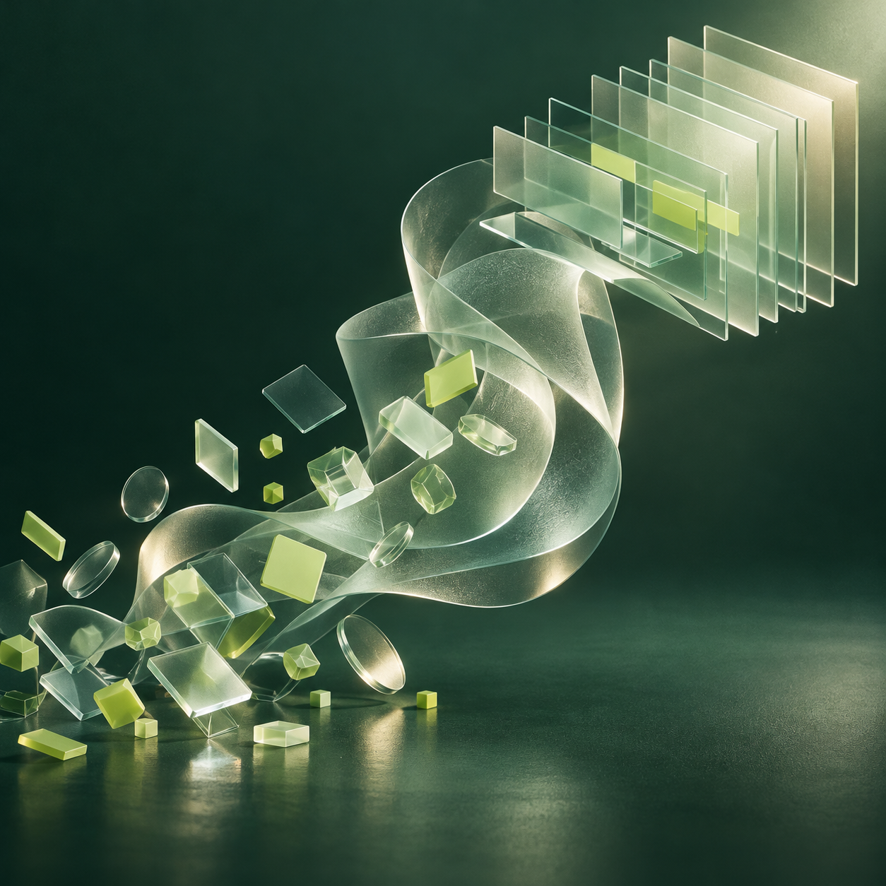
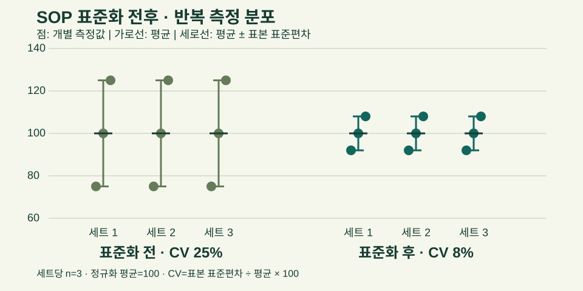

A사 · 연구원
세포 기반 후보물질 효능평가와 실험 재현성 개선. 편차 원인 분석 경험을 축적했습니다.
바이오 R&D 8년의 실험·분석 경험을 기반으로
개인의 문제해결을 팀 연구 프로세스로 확장해 온 연구자, 김서연입니다.
지원 목표바이오·의료 R&D 선임/책임급 연구직
생명공학 석사 · 바이오 R&D 8년 · 2018.09–현재
이메일·연락처: 직접 입력

in vitro 실험에서 데이터 해석·원인 분석·SOP 표준화로 역할을 넓혔습니다. 목표 JD의 효능평가와 Project Leader 요구에 연구 설계·팀 운영 경험을 연결합니다.
세포 기반 후보물질 효능평가와 실험 재현성 개선. 편차 원인 분석 경험을 축적했습니다.
바이오마커 발현 데이터 분석과 외부 시험기관 협업. 2022.03 선임연구원 승진.
팀 실험 프로토콜 표준화, 연구 데이터 리뷰, 후배 지원과 연구 프로젝트 운영.
Cell culture, qPCR, Western blot, ELISA, Flow cytometry 기반 실험 설계·분석.
JD 연결 · in vitro 효능평가·cell-based assay
조건별 편차 분석과 통제 우선순위 판단. C사 표준화 프로젝트에서 CV 약 25% → 10% 이내.
B사 발현 데이터로 바이오마커 후보와 MOA 가설 검토 근거 제공.
MOA 연구 직접 리딩 경험은 보완 과제입니다.
데이터 리뷰·팀 SOP 합의·외부 시험기관 협업. 표준 기준을 팀원 4명·2개 과제로 확산.
연구원마다 다른 실험 방식으로 결과 편차가 반복되고 후보물질의 효능·기전 비교 판단이 지연됐습니다. 모든 변수를 동시에 바꾸는 대신 데이터로 통제 순서를 정했습니다.
팀원별 세포 계대수·처리 시점·측정 시점과 qPCR·Western blot 결과를 표로 정리했습니다.
판단 · 서로 다른 실험을 동일 기준에서 비교GraphPad Prism으로 조건별 데이터를 비교해 편차가 큰 구간을 찾았습니다.
판단 · 여러 변수 중 원인 후보부터 좁힘계대수별 데이터 편차가 가장 커 세포 계대수를 먼저 통제했습니다.
판단 · 실험 자원이 제한됐고 배양 단계에서 즉시 조정 가능측정 시점 두 조건을 1회 비교 실험하고, 데이터 리뷰 회의에서 SOP를 확정했습니다.
판단 · 의견보다 비교 데이터로 팀 기준 합의표준화 전후 각 3개월의 실험노트·데이터 리뷰 자료를 비교했습니다. 반복 실험 간 편차가 줄었고 SOP를 과제와 신규 연구원 교육에 적용했습니다.
표준화 전 → 표준화 후
후 수치는 10% 이내라는 상한값입니다.
팀 공통 SOP 확산
신규 연구원 온보딩의 실험 교육·수행 기준으로 활용.
프로토콜 표준화 성과 인정
연구 개선 성과로 사내 수상.
0–30% 동일 척도 · 개선 후 막대는 상한값 10% 표시
기간 · 표준화 전 3개월 / 후 3개월
자료 · 실험노트, 데이터 리뷰 자료, 반복 실험 결과
확인한 변화 · CV 감소, 재실험 요청 감소
재실험 요청 감소율·샘플 수는 교안에 없어 추가하지 않았습니다.
표준 SOP를 팀원 4명과 2개 과제에 적용하고 신규 연구원 온보딩 자료에 포함했습니다. 효능·기전 판단에 쓰이는 데이터의 일관성을 높이고, 사내 우수 연구 개선상을 받았습니다.
증거 구성 · 실험노트 → 데이터 리뷰 → 표준 SOP → 교육 기준. 원본 자료는 이 웹뷰에 첨부하지 않았습니다.
실험 기록을 정리해 개별 측정값과 평균·표준편차를 비교했습니다. 표준화 전후의 분포를 분석해 반복 실험의 편차 감소를 확인했습니다.

전·후 각 3개 세트, 세트당 반복 측정 3개. 정규화 반응값 평균은 100, 세트별 표본 표준편차는 전 25·후 8입니다.
세트별 CV = 표본 표준편차 ÷ 평균 × 100. 세트별 CV는 25%에서 8%로 감소했습니다. 효능의 차이보다 반복 측정의 재현성 개선에 초점을 맞췄습니다.
문제 · 처리군별 발현 차이를 해석해 후보와 기전 가설의 검토 근거 확보.
내 역할 · 발현 데이터 분석과 바이오마커 후보·MOA 가설 검토 근거 제공.
결과 · 2022.10 국내 학회 포스터 발표.
문제 · 후보물질 효능을 비교할 재현성 있는 실험 근거 필요.
내 역할 · 세포 기반 평가 설계, 편차 원인 분석과 프로토콜 개선.
결과 · 후속 검증 후보군 논의 근거 제공, 국내 특허 출원 공동 발명자.
Cell culture · in vitro cell-based assay · qPCR · Western blot · ELISA · Flow cytometry
GraphPad Prism · 데이터 리뷰 · 실험계획 검토 · SOP 표준화 · 연구 프로젝트 운영 · 외부 시험기관 협업
국내 학술지 공동저자 논문 1편(2018)
국내 특허 출원 공동 발명 1건(2020)
국내 학회 포스터 발표 1건(2022)
사내 우수 연구 개선상(2025.01)
효능평가의 신뢰성을 높이는 표준화와 데이터 해석, 팀 기준 수립과 연구 운영.
MOA 가설 검토 참여 경험을 바탕으로 기전 연구의 판단과 리딩 경험 확장.